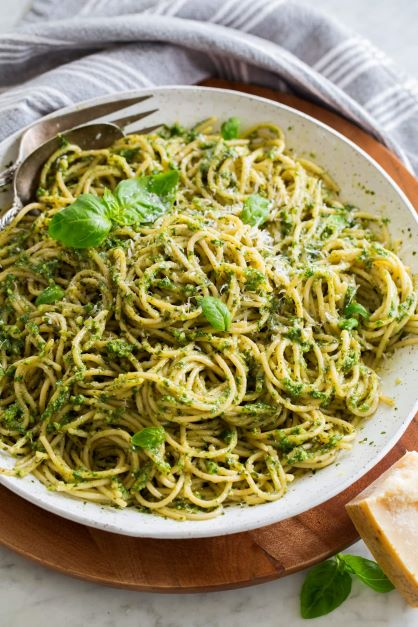

Home
Pesto Pasta

Description
Pesto Pasta! This delicous recipe will make you want to never use red sauce again. It combines pasta noodles, pesto sauce, and cheese
to make the perfect dish.
Ingrediants
- Itallian pasta noodles
- Pesto sauce
- Parmasan cheese
- Basil leaves
Steps
- Boil a pot of water.
- Add salt and butter to the water.
- Add noodles to water, break in half if desired.
- Grate your cheese, skip if you already have grated parmasan.
- Take out noodles when soft.
- Pour pesto sauce onto noodles and mix.
- Add grated parmasan and mix.
- Add pesto leaves to dish.
- Enjoy!